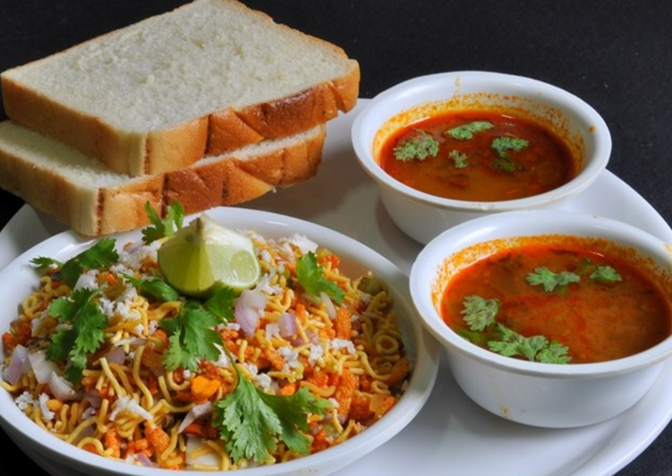
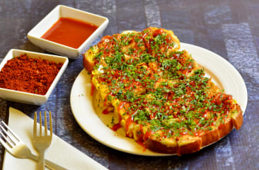

Misal
Eaten with bread,it is a spicy dish made up of ingridients like matki (moth bean or usal ), sev , gravy made of potato, onion, pepper and other spices. It is often served with papad and dahi. Following are my favorite goto restaurants.
Khandoli
If you're a fan of Egg dishes, Khandoli is sure to please you. Perfect combination of Egg omlette, bread, cheese and onion rings, Khandoli has surely been a choice of thousands of people visiting Kolhapur. Popularity of Khandoli has encouraged the chef to introduce other dishes like toasts, sandwiches and smoothies in his unique style. Click to know details.
Shabudana Khichdi
Khichadi is liked by people not only during fasts, but also otherwise. If you want to have one of the best kinds of Khichadi and related items, this is just the page you need.
Idli, Dosa & Uttapam
If you're a homesick South-Indian stuck in the city, don't worry you have a lot of cool options to satiate your hunger. Choose the nearest hotel:
Pizzas, Pastas & more
If you don't like change and prefer mainstream pizzas or burgers over local food, click to get the damn address!